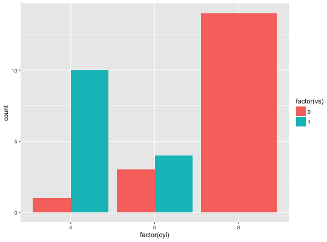
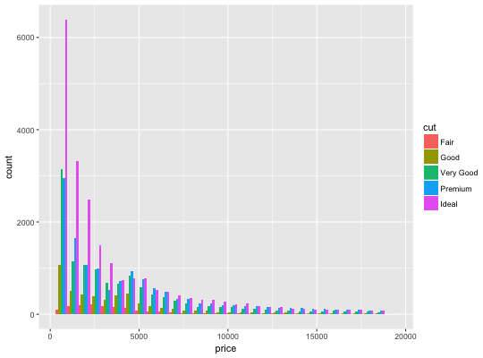
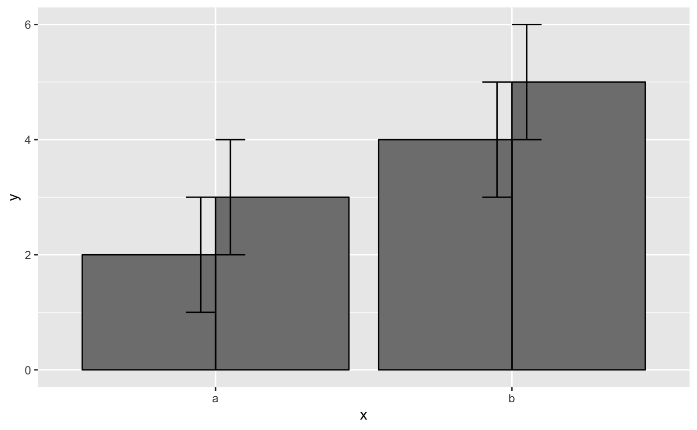
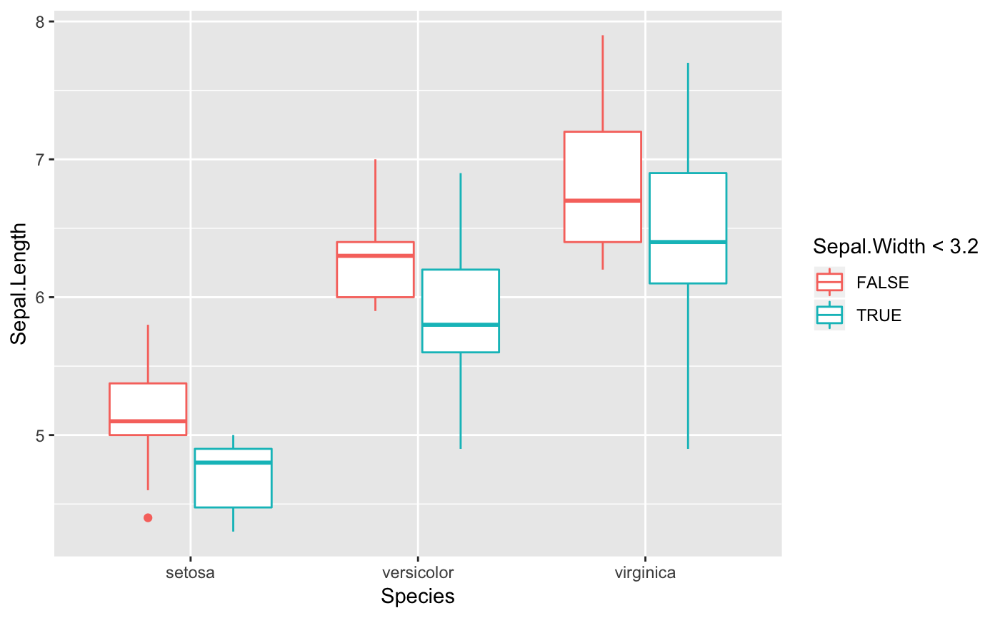
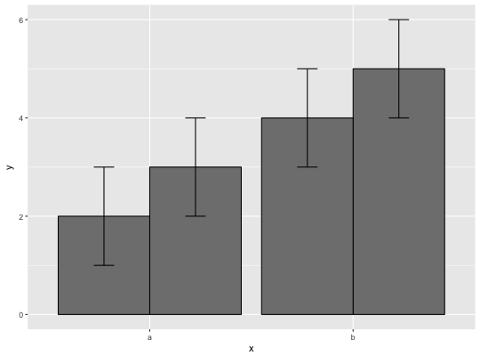

Dodge overlapping objects side-to-side
Dodging preserves the vertical position of an geom while adjusting the horizontal position.
position_dodge(width = NULL)
Arguments
- width
Dodging width, when different to the width of the individual elements. This is useful when you want to align narrow geoms with wider geoms. See the examples.
See also
Other position adjustments: position_identity,
position_jitterdodge,
position_jitter,
position_nudge,
position_stack
Examples
#># see ?geom_boxplot and ?geom_bar for more examples # In this case a frequency polygon is probably a better choice ggplot(diamonds, aes(price, colour = cut)) + geom_freqpoly()#># Dodging with various widths ------------------------------------- # To dodge items with different widths, you need to be explicit df <- data.frame(x = c("a","a","b","b"), y = 2:5, g = rep(1:2, 2)) p <- ggplot(df, aes(x, y, group = g)) + geom_col(position = "dodge", fill = "grey50", colour = "black") p# A line range has no width: p + geom_linerange(aes(ymin = y - 1, ymax = y + 1), position = "dodge")#> Warning: Width not defined. Set with `position_dodge(width = ?)`# So you must explicitly specify the width p + geom_linerange( aes(ymin = y - 1, ymax = y + 1), position = position_dodge(width = 0.9) )# The same principle applies to error bars, which are usually # narrower than the bars p + geom_errorbar( aes(ymin = y - 1, ymax = y + 1), width = 0.2, position = "dodge" )p + geom_errorbar( aes(ymin = y - 1, ymax = y + 1), width = 0.2, position = position_dodge(width = 0.9) )